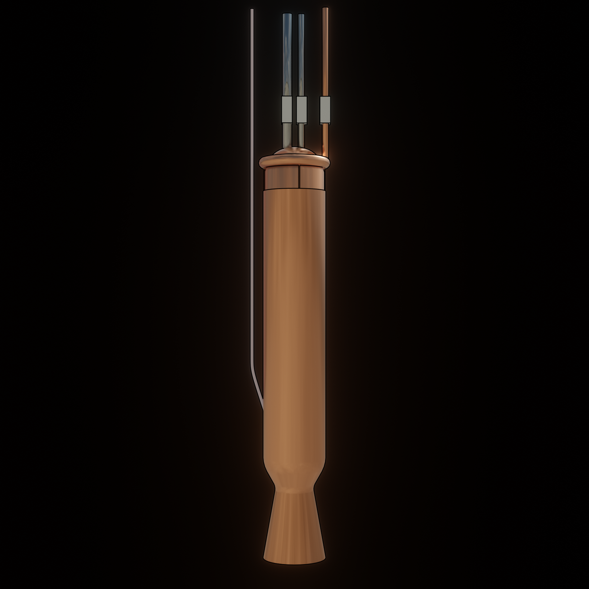

The name is currently a code-word. There is not yet a name for this engine. POE stands for "pineapple of engineering". Very unfunny, I know. I made it up in Math class.
The POE-1 is made almost entirely out of copper. The fuel injector will be made from brass instead.
The copper pipes in this image are for the cooling system, passing water through the engine. These pipes will not be copper in real life due to corrosion issues.
The steel pipes are for Methanol and Gaseous Oxygen. The weird pink pipe is for propane to flow through just one time to ignite the engine.
The previously mentioned brass fuel injector is located near the top of the combustion chamber. It is structured so that The high pressure gaseous oxygen will form a cylinder.
This cylinder will then
collide with a cone of high pressure liquid methanol. This should (hopefully) create a good-ish mixture. If not, well, I don't really care it's my first
serious engine.
Cold water will pass through the copper pipe, into the torus shape at the top, and through 4 very small pipes. These pipes will greatly increase water pressure. This high pressure
water will then flow through flat spray nozzles from a catalog I found a while ago. These will deliver a mostly uniform fill of water
within the cooling jacket. That water will then
run through the jacket, cooling the engine, before being dumped overboard through holes around the nozzle.
This will also create a cool looking effect where the blue engine exhaust
will kind of look like it's getting pulled away from the nozzle.
Being copper, the entire engine will suffer heavy corrosion, and be unsalvagable.
The engine also holds no turbomachinery. It will be a pressure-fed cycle.